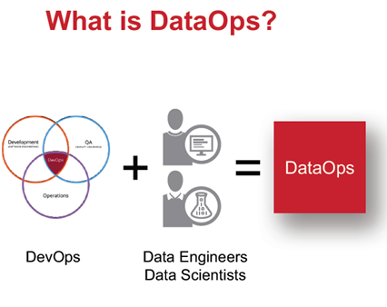
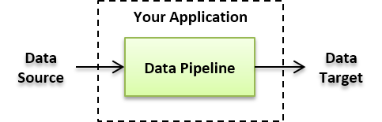
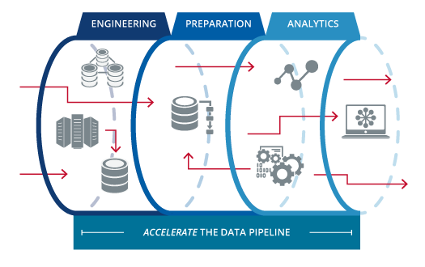
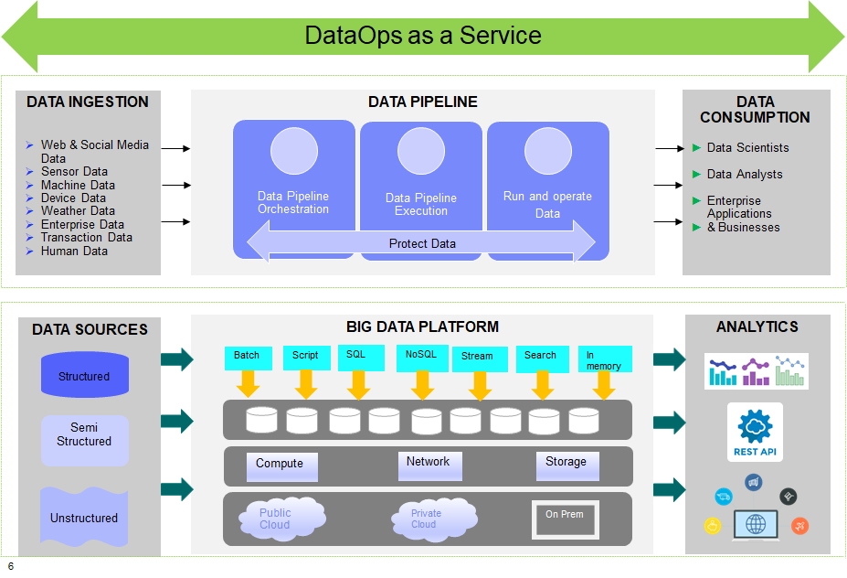
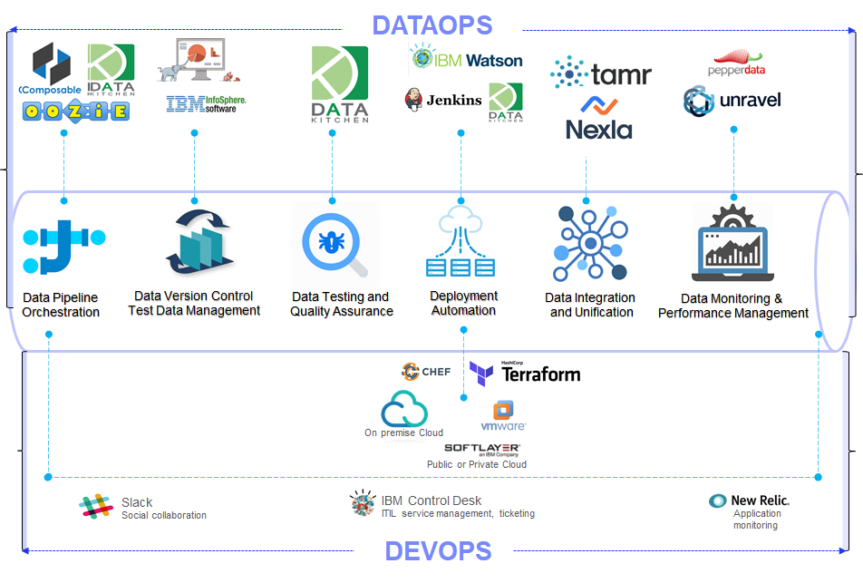

DataOps & Data Pipelines
Table of Contents
Data Ops
| DataOps |
|---|
|  |
Data Ops lies at the conjunction of data engineering, data science and data analytics.
Drivers for DataOps
Problems
- Data Scientists spend a lot of time working on the data for various phases such as data filtration, cleansing, deduplication, profiling and transformation
- As part of developing analytical models, the data scientists are required to test the models against datasets. With each iteration, the data needs to be refreshed and the models are required to be retrained. The metadata also changes and this requires to be monitored , giving rise to a need for KPIs for data
Drivers
- Data must be delivered at the speed of analytics to meet the demand
- Accelerate Data preparation and Data Enrichment for Data Scientists
- Deliver DataOps as a Service for Data Platforms and Solutions – as an extension of DevOps & DevSecOps
- Data Scientists should be able to consume data quickly with up to date datasets which are consistent throughout the life cycle of data without compromising on integrity
Data Pipelines
Data has a workflow in a Data Platform between the point of source through the various stages of transformation to the point of consumption.
| Data Pipeline |
|---|
|  |
This includes Ingestion, Integration, Storage, Processing, Testing, Serving, Machine Learning & analytics. |
|  |
DevOps vs DataOps
| DevOps | DataOps |
|---|---|
| Development + Operations | Data + Operations |
| Develop Software | Deliver Data |
| Application Developers | Data Scientists & Data Analysts |
| Application Design | Data Engineering |
| Integration of Developers, Testers, Operators and Users | Integration of Data practitioners |
| Application Development Life Cycle | Data Life Cycle Management |
DataOps-as-a-Service
| DataOps-as-a-Service |
|---|
|  |
DataOps Ecosystem
| DataOps Ecosystem |
|---|
|  |